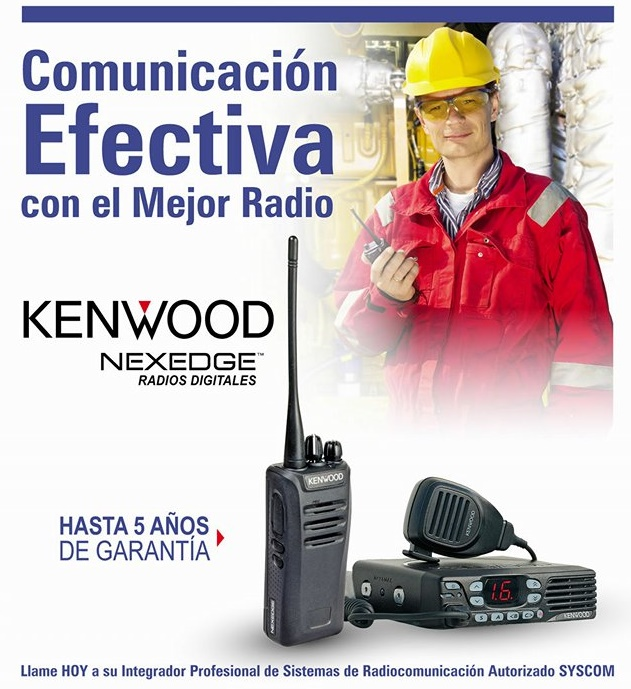
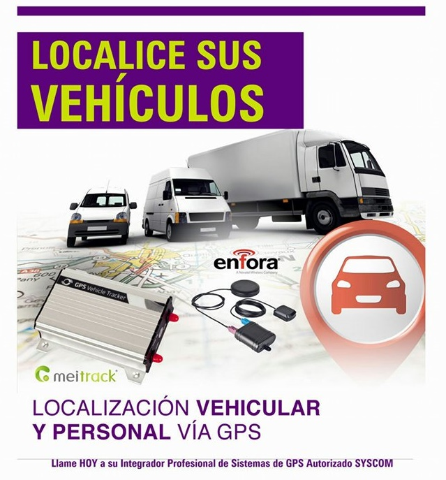
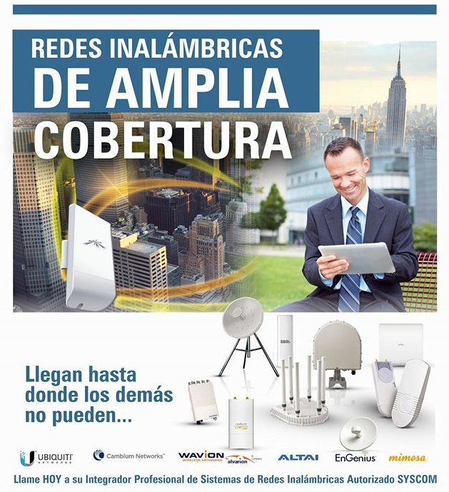
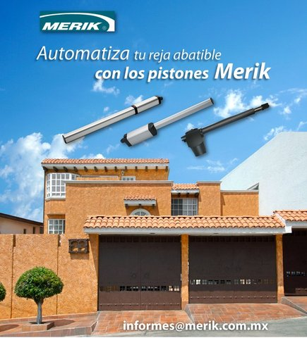
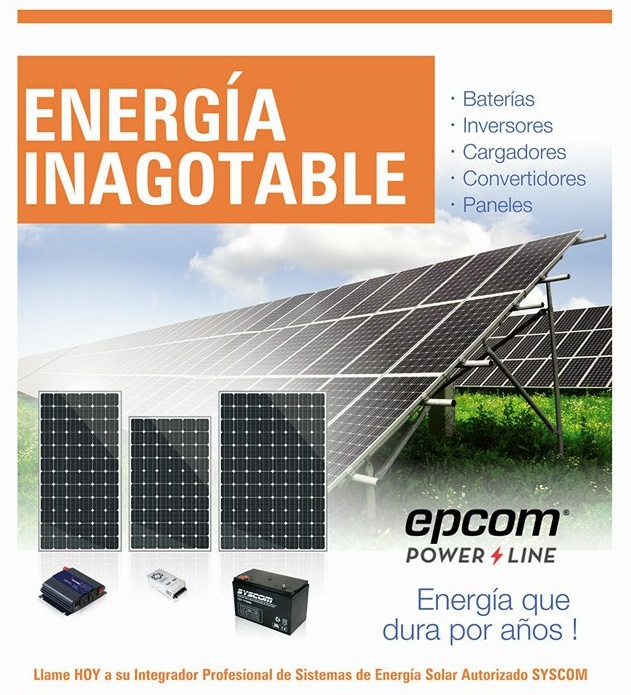

- 
- 
- 
-

-

- 
- 
Disminuya sus gastos en comunicacion.
La Nueva Generación “NEXEDGE” de KENWOOD supera por mucho a la tecnología de la competencia, principalmente porque los radios no requieren de un repetidor para operar en modo digital y ofrecen interoperabilidad entre las tecnologías actualmente en uso y las de más reciente aparición. El radio NEXEDGE funciona en forma 100 % digital, con o sin repetidor (radio a radio), pero la ventaja más importante es que está preparado para operar en modo troncal (Digital y analógico LTR), así como multisitio (6 sitios).
Tenga el control de sus unidades.
Conozca en cualquier momento la ubicacion de su unidad mediante mensajes de texto o con una modica mensualidad haga uso de la pltaforma web, vea la ruta que se hizo, consulte el nivel de combustible, y en caso de robo apague el vehiculo via SMS.
Puntos de acceso a internet donde otros no llegan.
Soluciones para interconectar redes de datos, transmisión y/o monitoreo remoto de sistemas de seguridad (videovigilancia) e internet inalámbrico. Puntos de Acceso (Access Point), Puentes (bridges), Servidores, Ruteadores (Routers), Tarjetas de red (Land Cards), antenas, amplificadores y cables. Todo lo necesario para instalar un Sistema Inalámbrico Móvil.
Desarrollo profesional de sistemas a la medida.
Desarrollamos sistemas locales y sistemas web a la medida de sus necesidades, acceda a sus datos de venta, de inventario, o cartera de clientes desde cualquier dispositivo conectado a internet con la mayor seguridad, haga reportes de ventas mensuales, semanales, por dia; Por que hoy en dia el exito de un negocio consiste en la manera en que maneja su informacion.
Tecnologia para medir la eficiencia de su personal.
Ofrece Equipos y Sistemas de Control de Acceso Comercial e Industrial, que le darán mayor seguridad y control en áreas restringidas, contamos con detectores de metal, barras de panico para puertas, chapas magnéticas, lectoras de tarjetas, teclados para acceso, lectoras de huella dactilar, botones para activación de puertas, tarjetas para acceso, verificador de rutina para vigialntes y software para control de equipos automatizados.
Vigile su casa o negocio con cualquier dispositivo movil.
Monitoree desde cualquier lugar el bienestar de su familia y hogar o el correcto funcionamiento de su negocio, con los equipos profesionales de videovigilancia usted podra ver lo que sucede en tiempo real, con una gran calidad de imagen.
Automatizacion de calidad.
Ahorre tiempo y esfuerzo con la automatizacion de portones, con nuestros instaladores profesionales y equipos de la mejor calidad, haga que su porton ya sea abatible o corredizo abra o cierre con un simple clic.
Seguridad extra para su patrimonio.
Las chapas magnéticas generalmente utilizadas en el 80% de las instalaciones, son abiertas en caso de falla, y ésta es muy utilizada por casos de seguridad del personal, ya que en casos de incendio o terremotos es necesario que bajo esta condición de alarma, al momento de cortar el suministro eléctrico nuestras puertas estén abiertas para una fácil salida o evacuación.
sistemas Anti-Intrusion.
Honeywell Security and Communications es un fabricante líder de sistemas de alarmas de seguridad para los mercados industrial, comercial y doméstico. Nuestra cartera, que sitúa a Honeywell entre los líderes del mercado, incluye: la gama Galaxy, la completa gama de sensores, PIRs, detectores de rotura de cristales y de sonido de IntelliSense Dual Tec®, el sistema de alarma inalámbrico Domonial para aplicaciones residenciales, la amplia gama de la oferta en seguridad doméstica también incluye paneles Captiv-8, Optima y Logic, así como el equipo de detección, señalización y observación Viper, líder en el mercado.
Ahorre en consumo de energia electrica.
Funcionamiento y Aplicaciones de la ENERGIA SOLAR. Un sistema fotovoltáico es un conjunto de dispositivos cuya función es transformar la energía solar directamente en energía eléctrica, acondicionando esta última a los requerimientos de una aplicación determinada. Uso Doméstico.- Lo mismo para hogares en el medio rural, donde todavia no llega el tendido de las líneas de fuerza eléctrica o en islas o lugares apartados. También para aquellos convencidos del cuidado de la ecología. Sistemas de Bombeo de Agua que han ayudado al crecimiento y desarrollo de zonas agrícolas donde la electrificación es escasa o nula. También se encuentra en Sistemas Híbridos junto con los Generadores Eólicos que preveen de electricidad en zonas donde el nivel del sol y/o aire al año permiten este tipo de aplicación.